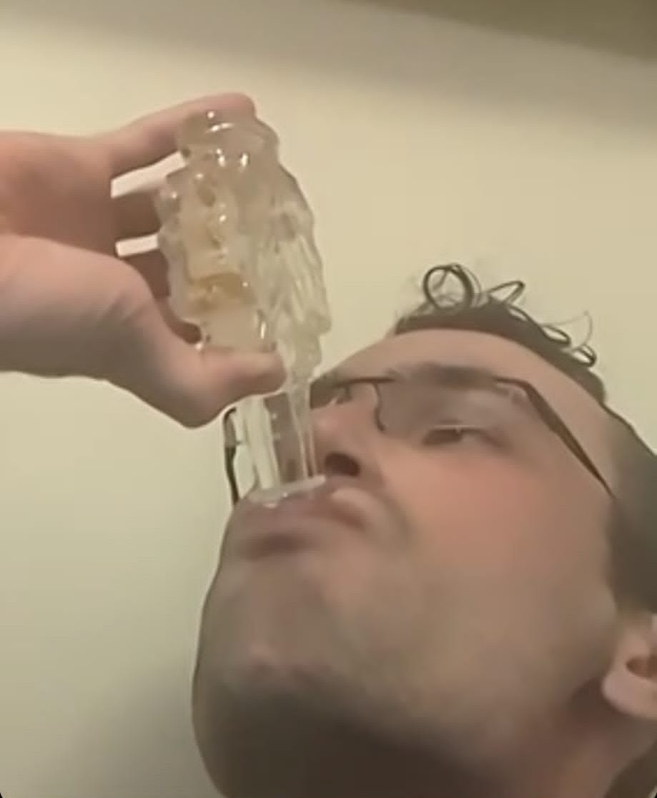

Bostreal Day 2
I woke up after 7 hours sleep and reviewed my plan for the day. I had a route to go 300km along paths recommended by the adventure cycling association, but the fatigue from the day before and evidence of a big saddle sore persuaded me to consider a more direct route to Montréal along Lake Champlain along a causeway with a bike ferry that a friend had recommended to me. I drew a route and rolled out at 7am to correct the mistake of not having a real dinner the night before by going to the nearest Dunkin’ for a breakfast sandwich, pastry and iced coffee. Then I left Middlebury, regretting my choice of hastily-drawn ridewithgps route that immediately sent me up a steep, punchy climb before heading into the countryside.
In better weather, this section of the route would be undeniably enjoyable. The rolling hills between Middlebury and Burlington are covered with scenic farms and fields dotted with wrapped haybales looking like clouds on a green sky. To my dismay, there was a gray sky and a drizzle early in the morning, but it wasn’t too bad with my rain gear on. I would have been more concerned if the wind had been bad, but I decided to ask the wind to be friends again and a tailwind began that would push me ahead the rest of the day. Feeling optimistic, but hungry I stopped for a second breakfast sandwich (decidedly the best: sausage and biscuit) the next time a gas station graced my path.
The route towards Lake Champlain was fantastic as it swept around idyllic fields with horses and barns. The sounds of rain gave way to the hum of tires on the road and the breeze on my back. As I wound my way around homes, past trees, and up and down hills, the wind would slide through my wheels and make the metal ring in the way that a wine glass would when played on its rim. The weather was improving and so was my rhythm as an earworm took hold, as they usually do on my long rides. This time, instead of Christmas carols or flute music, it was Iggy Azalea’s song “Fancy”. I pedalled to the beat, imagining myself “in the fast lane from LA to Tokyo” up until I reached a few miles of dirt roads whose crunchy gravel then took over the soundscape.
Ten miles from Burlington, I reached a bike path on the lake and the sun started to break through and heat the road up. Although it was nice to be in a city, navigation gets trickier when you have to make a turn every km instead of every 10km in a patchwork network of bike paths. Thankfully, I was able to get some clif bars and water before reaching the causeway that would take me to Hero and the Grand Isles. I sped along the gravel causeway to get a good position on the bike ferry and I reached it right as it took off taking a batch of passengers across the 100 foot gap in the causeway for boat traffic. While waiting, I started chatting with people in line who were renting bikes to ride to Hero and it turns out they were also headed to Montréal, except like normal people they would drive over in their car the next day. I was the last person to get onto the next boat, which was fortunate for time because it was around noon with about 100 miles to go and 6 hours until the conference reception started. If all went well, I thought I had a decent chance of getting a free meal at the finish.
I never got that meal because in the afternoon heat all I wanted was a cold drink, so I immediately stopped for a cold lemonade and cider slushee at one of the roadside maple creemee stands that are ubiquitous in Vermont. The relief was only temporary because as I trekked north on the wide shoulder of US-2 I felt like I was searing under the sun and baking from the radiant heat of the road. I really wanted a swim in the lake, but I only enjoyed the scenery and amazing views of Burlington and the Green mountains in passing as I knew I couldn’t delay myself beyond the stops I needed to make once an hour to refill my water bottles. Fortunately, the tailwind was still pushing me and my legs, which were feeling weak from the day before. Eventually I saw a cyclist up the highway and was motivated to follow him with a steady pace. The effort was completely reasonable but it kept me entertained as it took over 5 minutes to catch up and overtake him. Then I left the Grand Isles and entered Alburg, which I remember for having the worst pavement and potholes of the entire route, and continued towards the border.
After one last American gas station stop I topped off my water with electrolytes and carbs and waited for the drinks to mix. The fizzy electrolytes were so good despite being homemade. The only reason they were bubbly was because I had messed up the ingredients for my recipe and forgotten to get salts in the form of sodium citrate. Instead I had purchased citric acid and ended up supplying the sodium through baking soda, which would react with the acid and release CO2. I was so thirsty and warm that when I happened to see a thermometer riding past a school I couldn’t believe that it said 85 F. Rather, it felt like the 90s and I was sweating everywhere. Strangely, my arms started to itch so I looked and could only see beads of sweat.
My persistence turned into excitement as I finally turned off US-2 to cross the Quebec border at the quiet Alburg-Noyan crossing. The Canadian border guard was quite friendly and asked where I had come from and where I would be staying and for how long. He seemed surprised that I intended to reach Montréal, 100km away, in 4 hours but after I told him I had started yesterday in Boston he told me that I could use their bathroom - goodness me what a kind man.
So I ate a granola bar and I set off into Quebec. The roads had less of a shoulder in the rural areas but drivers seemed to leave a decent gap. Initially, I was surprised by how rural it was and the lack of gas stations, because the heat hadn’t abated and I still needed water. Luckily, I went past an Esso and treated myself to a refreshing Canadian beverage: tea-flavored sprite.
As the farmland gave way to the suburbs on the Richelieu river, I found myself once again on bike paths that to my surprise would guide me all the way to Montréal. This network is called La Route Verte and it was impressive to me how safe it felt, except that I had no idea what the Canadian flashing green traffic light meant. What immediately became more concerning once I was riding along the river were some thunderstorms in the distance. I had seen these in the forecast, but I was effectively clueless about how to avoid them. Adding to my concern, I was riding on gravel paths along the river that would turn to mud in rain, and my racing bike couldn’t even ride through an inch of mud. There were already some muddy patches from previous days’ rains and once I stopped to walk my bike through one and got the rear wheel completely stuck with mud in the frame.
As the thunderstorm neared, my route luckily returned to asphalt when I suddenly felt a few drops of rain and decided to stop and don my rain gear. The storm took a savage turn when, with both my feet on the ground and as I fumbled around wrapping a trash bag around my backpack, the front arrived with massive wind gusts that blew water off the river into an upside-down rain and threatened to send my bike flying from beneath me. I hunkered down and leaned into the wind for a minute until it subsided and finally let me continue wrapping my backpack. Just then, I marveled at a Quebecois teenager who rode a bike past me as though no catacylsmic wind storm had flown by. When my fearful shivers stopped, I remounted and continued riding in light rain.
Things went downhill when a few minutes later my route took me to another gravel path, now turned to mud. I knew I would have to reroute so I stopped to take out my phone in the rain, but as soon as the touchscreen got wet it hardly worked. So I shielded my phone from the rain with my torso and eventually opened the maps app only to realize that I hadn’t downloaded any maps and that I didn’t have a Canadian cell phone plan with data, so I started to panic. In that moment, the rain kept falling harder yet miraculously I got a phone call from my parents, who told me that they had been tracking my progress but were worried they hadn’t seen any GPS updates since I crossed the border. I explained my route and phone predicament to them and as it turns out my mobile carrier would give me some free roaming data, hopefully enough to look up the maps. So I hurriedly ended the call because I noticed that the rain was becoming a proper deluge and I needed to take cover before the thunder came overhead. I started to retrace my steps to the last intersection where I could get off the river and onto the main road. There was a properly slippery and dangerous steel-grating drawbridge that I walked over, before I took cover under the narrow sill of the roof of the control room of the bridge. Secretly, I hoped some passing driver would offer me a ride, but no one stopped.
I waited another ten minutes for the worst of the rain to pass. Unfortunately, I had already become drenched before taking cover and the roof only kept my head dry, not my feet. Before continuing in what was now a manageable amount of rain, I took my shoes off to pour out the buckets of water in them. To be frank, I wasn’t sure where I should be going at this point because I was off-route on a non-bike friendly road in a thunderstorm, trusting in my lights, reflective vest and ankle bracelets to keep cars from hitting me. So I decided I would follow the road along the river I had been tracking, because my phone hadn’t downloaded the maps. I slowly took off on the road that was probably covered in half an inch of water, and I felt like I could hardly see with the amount of rain and grime that were on my glasses. Road signs told me I was heading towards Chambly but I had to keep my eyes on the road because the surface was shitty and I was trying to avoid falling into some immeasurably deep water-filled pot hole.
Fortunately, cars gave me a wide berth as they passed, but I still hit a few pot holes. After striking one of these, the rain suddenly intensified and a thundercloud appeared overhead, and it wasn’t messing around. I immediately looked for a business with a covered porch and was glad I did as the heavens let loose once again with unbelievable lightning and thunder claps above. I waited this out and was optimistic that the weather would improve as the worst of the storm moved away. Still, my confidence was shaken and my exhaustion was getting worse when I realized that I was running on fumes of adrenaline. I continued through the sketchy, flooded roads into Chambly center and gratefully rejoined my original route. A month afterwards, I would reflect on the experience with my parents over beers and look down at a can of ‘Fin du Monde’ triple made in the same town: Chambly, Quebec. Indeed, at the time I thought that storm would be the end of me and the whole trip was also starting to remind me of my impossible 91 km, 2-day march to Finisterre when I did the Camino de Santiago.
I was on the Route Verte again when the rain stopped, but I couldn’t sigh in relief because I was too tired from not eating or drinking during the hours of the storm. I was an unimportant number of kilometers from Montréal, probably 30, because all I could do was follow the route. My phone seemed too useless to call a cab or find public transit without normal data and my French too flawed to explain what I was doing to normal people. Thankfully, the Route Verte was the perfect path to take, with great signage and separated from big roads. However, my route here completely relied on ridewithgps and I regretted this in places where my gps sent me to gravel paths while the perfectly paved Route Verte ran in parallel just blocks away. I was really impressed by the Route Verte and I wish we had more infrastructure like in the U.S.
I was only 10km from the finish when I crossed a bridge over a freeway that gave me a first glimpse of the Montréal skyline with Mount Royal behind. Finally, the finish was in sight, but I had no second wind to get there. It was a genuine slog over the last bridge across the Lawrence river and I got passed by several more recreational cyclists who seemingly had not been caught in a thunderstorm. I really wasn’t having a good time and I knew it would take days to recover from this massive trip. But I kept going knowing that it was only through my own determination and effort that I would finish what I had set out to do. More bike paths led me through the city and it looked really diverse and cool, but it was half past 7 and I just wanted to get to a hotel before dark, eat, and sleep. I made it all the way to McGill by following local cyclists along their amazing separated bike lanes. Finally, I got to the campus feeling haywire as the adrenaline of the last three hours since the thunderstorm began to wear off.
I had no idea where to check in for my room at student housing so I first decided to go register at the conference and confessed to the students who checked me in that I was unimaginably exhausted. Luckily, they gave me a bottle of maple syrup along with other conference goodies and they instructed me how to get to student housing. I probably walked for half an hour looking for the student housing but I just couldn’t decide where to go. I tried calling a few McGill student services numbers but at 8pm on a Sunday nobody picked up and the place that was the dorm I meant to go to seemed to have its doors closed so I didn’t even think of opening them because I temporarily forgot to how to use a door. I returned to the registration desk having walked a mile in search of the apartments unsuccessfully and fortunately as the students were leaving they showed me back to the dorm I thought was closed, simply opened the door for me, and wished me a good evening. The receptionist was gone so I sat on the floor with my bike leaning on the wall and eyeing the bottle of maple syrup. I was building the courage to take a swig when the staff returned so I checked in and showered before downing the whole bottle as I called my parents to tell them I was alive.

Without real food I felt like I would starve, but I really regretted not having normal shoes so I had to walk in my soggy bike shoes to the nearest restaurant, which happened to be a Tim Horton’s - a Canadian classic. Honestly, I wasn’t impressed by any of the three meals I got, but at that point I had spent so much energy on the 580 km ride that no quantity of food could save me. Also, my good knee really hurt, probably because I had adopted an awkward position all day to relieve my saddle sore. Adding to my woes, I had also noticed that I forgot a cable to charge my phone at the motel and that my battery pack had gotten wet in the thunderstorm and stopped working, so I went to the 24-hour store Couche Tard to replace the cable and buy a razor so I could present myself the next morning at the conference. None of these things seemed to really matter because I was so happy to be alive.